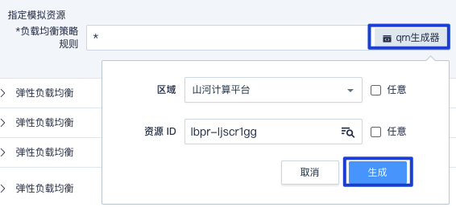
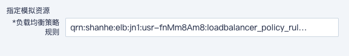

资源标识符 QRN
资源名称 (QRN) 被用来作为资源的唯一标识。当您需要在全局环境（比如 IAM 策略）中明确指定一项资源时，我们要求使用 QRN 。
格式说明
所有资源均可采用六段式描述方式：
| QRN 格式 |
|---|
| qrn:partition:service:region:account-id:resource |
说明
以上是 QRN 的一般格式，具体组成部分和值取决于服务。
要使用 QRN，请将示例 QRN 中的红色斜体文本替换为您自己的信息。
-
全局资源名称(qrn)：表示是云资源。该字段是必填项，且固定为"qrn"。
-
平台分区(partition)：目前作为保留字段。该字段是必填项，且固定为"yiqiyun"。
-
服务(service)：（例如：弹性云服务器[ecm]、虚机私有云[vpc] 等）的产品命名空间。该字段是必填项，相关服务列表请参见：服务类别。
-
区域(region)：资源所在的区域或可用区（例如：济南1区[jn1]等）。一些全局资源的 QRN 不需要指定区域，因此该字段可能会被省略。相关区域列表请参见：区域列表。
-
账号标识符(account-id)：该资源的所属账号 id（例如：usr-xxxxxx）。该字段是必填项。
-
资源(resource)：描述该资源的具体详情。该字段是必填项。它通常有以下几种描述方式：
说明
1.
<resource_type>/<resource_id>表示某个资源类型下的某个具体资源。例如资源 ID 为 i-xxxxxx 的云服务器：instance/i-xxxxxx
2.
<resource_type>/*表示某个资源类型下的所有资源。例如所有公网 IP ：eip/*
3.
*表示某产品下的所有资源。
4.
特殊情况如
qrn:yiqiyun:iam::usr-xxxxxx:root用来表示该账号。
示例
账户 id 为usr-xxxxxx的账户：
qrn:yiqiyun:iam::usr-xxxxxx:root
资源 id 为i-xxxxxx的云服务器实例：
qrn:yiqiyun:ecm:jn1:usr-xxxxxx:instance/i-xxxxxx
资源 id 为iamp-xxxxxx的策略：
qrn:yiqiyun:iam::usr-xxxxxx:policy/iamp-xxxxxx
资源 id 为iamr-xxxxxx的身份：
qrn:yiqiyun:iam::usr-xxxxxx:role/iamr-xxxxxx
QRN 生成器
我们在每个需要填写 qrn 的地方提供了 qrn 生成器小工具，当您不知如何填写 qrn 时便可根据 qrn 生成器来生成。
-
根据工具指引依次选择下拉框中的参数，或者勾选任意以定位到多个同类资源。

-
点击生成按钮，将自动填写对应的 qrn 到输入框。

说明
通过工具生成 qrn 后，您还可以继续在该内容中按上方的格式来编辑修改指定资源。